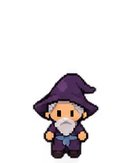
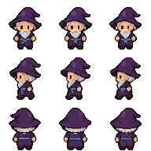
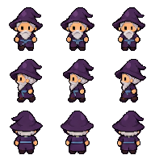

Oczy bohatera i maga — porównanie
Dokumentacja problemu, nie nowe grafiki do podmiany. Widok z przodu. Wszystkie powiększenia bez wygładzania.
Bohater 01 — oryginalne klatki
Krok 1: oryginał 160 × 208Stanie: oryginał 160 × 208Krok 2: oryginał 160 × 208
Arkusze po przygotowaniu i w grze
Bohater: przygotowany arkusz 192 × 192
Bohater: tekstura pobrana z uruchomionej gry
Przygotowanie dużych źródeł do klatek 64 × 64 zmniejsza szczegóły. Ten bohater pomija dodatkowy filtr siatki.
Mag Albrecht — ta sama klatka stania przed i po filtrze
Oryginalny mag — środkowa klatka górnego rzędu, ×4Mag po filtrze w grze — ta sama klatka, ×4 Starszy filtr uśrednia bloki 2 × 2 piksele i zmienia detale twarzy. Wniosek dotyczy faktycznych tekstur pobranych z lokalnej gry testowej; nie jest zgadywaniem z samego zrzutu telefonu. Dalszy wpływ przesuwania na ekranie przy ułamkowej skali wymaga osobnego sprawdzenia.
Wróć do pełnego zamówienia